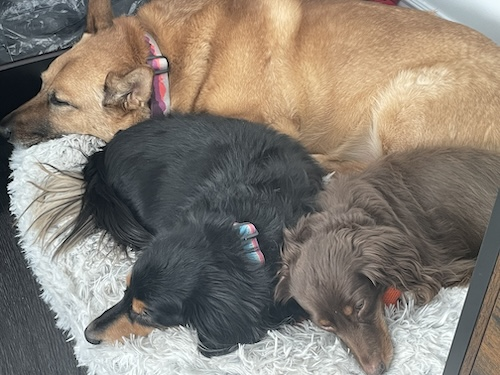
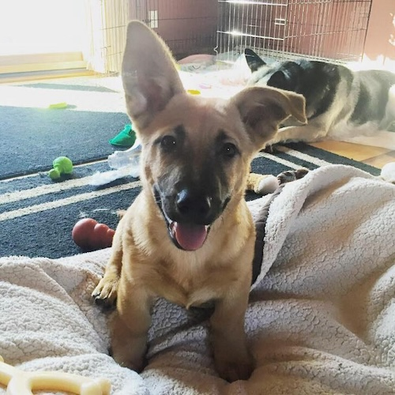
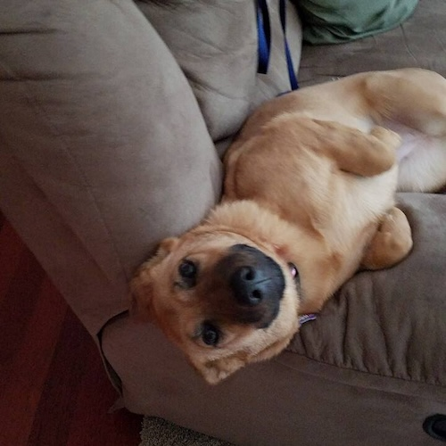
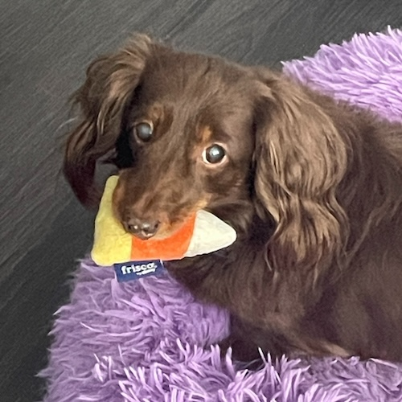
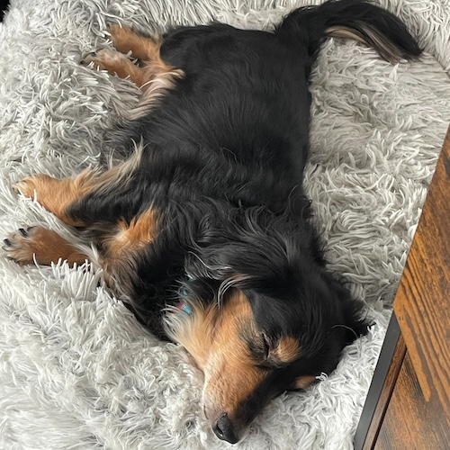

Pancake is a rescue that I have had since she was 6 months old. She came from Faerieland Rescue in Minnesota. Faerieland is an organization dedicated to the rescue of German Shepherds and Corgis. Pancake is a mix of both of the breeds and came from the Pine Ridge Reservation. Of a litter of 8 puppies she was one of two that got the short Corgi legs. She is now 5 years old and has already had two doggy ACL surgeries on each of her hind legs which is why I call her my bionic puppy. She absolutely love cats, but they don't return the feeling and loves to howl and make silly noises to get attention.
|  |  |
Bear Bear & Bubba are long haired miniature Dachshunds that are 12 years old. They are littermates but I didn't get Bear Bear until 6 months after I got Bubba. She originally was sent to a breeder in Oregon who deemed her too crazy and was sent back to the original breeder. I didn't think I wanted a second dog, but didn't hesitate to say yes when I got the call from their original breeder. They truely live up to their breed characteristics in barking and stubborness. They have not yet met a trainer who can tame them having been kicked out of several puppy class for being too distracting and making it all about them. Despite their quirks, they very loyal and protective towards the members of our family
|  |  |
Below is a list of their favorite doggy safe foods
| Businesses | Service | Website |
|---|---|---|
| Chewy | Online Pet Store | chewy.com |
| Pawtown Oasis | Boarding and Grooming | pawtownoasis.com |
| Layton Veterinary Hospital | Vet & Boarding | thrivepetcare.com |